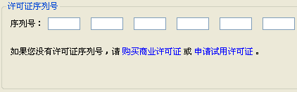
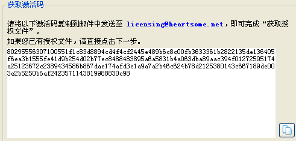
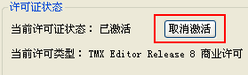

-
免费版
-
试用版
-
正式版
-
申请试用：
1、访问试用申请网站https://lic.heartsome.net/webbuy/r8trial.jsp。
2、输入姓名、电子邮箱，及其他选填信息。
3、提交申请表单，系统会自动发送试用许可证到您的填写的电子邮箱。
-
购买许可证：
1、访问购买网站https://lic.heartsome.net/webbuy/r8buy.jsp。
2、输入姓名、电子邮箱，及其他选填信息。
3、选择要购买的产品及版本类型，并输入购买数量。
4、点击按钮，再次确认订单信息无误后，点击按钮，并按相应的提示进行支付。
5、支付成功后，我们的许可证服务器会自动将许可证发送到您填写的邮箱。
-
在线激活：
1、在
许可证管理对话框中，将从邮件中复制的许可证号码粘贴到第一个文本框，其余文本框将自动填充。
2、确认网络连接。如果您通过代理服务器连接 Internet，请点击【网络连接】按钮，进入自定义代理设置。
3、点击【激活】按钮。
4、若无异常情况发生，则会提示已成功激活，重新打开“帮助”-“许可证管理”即可看到许可状态为“已激活”。
-
离线激活：
在使用离线激活方式之前，请先确认您已购买商业许可证，而非试用许可证。离线激活需要如下四个步骤来完成：
1、输入您购买的商业许可证序列号，点击【下一步】按钮。
2、获取激活码：
下图所示的界面上，显示了软件自动生成的激活码，您只需将其复制到邮件或文本文件中，将其发送到 licensing@heartsome.net，然后等待我们的处理。这时您可以退出本软件。

3、获取授权文件：
Heartsome 在收到您提供的激活码之后，会将相应的授权文件（文件名为“序列号.lic”形式）以附件形式发送到您的邮箱。请将收到的授权文件从邮件中保存到您的本地硬盘中，然后重复上述第一、二步操作，
并在上图的界面中直接点击【下一步】按钮。
 特别说明：如果您想一次性以离线方式激活多个许可证，也可以用 Excel
文件（.xls格式）保存激活码。 请将激活码放在 Excel
表格的第一列、且每行只放一个激活码。为方便识别和管理多个许可证，您还可以在表格的第二、三列保存与激活码相对应的许可证序列号、使用者姓名或计算机名等附加信息，但只有第一列的激活码是必需的。
特别说明：如果您想一次性以离线方式激活多个许可证，也可以用 Excel
文件（.xls格式）保存激活码。 请将激活码放在 Excel
表格的第一列、且每行只放一个激活码。为方便识别和管理多个许可证，您还可以在表格的第二、三列保存与激活码相对应的许可证序列号、使用者姓名或计算机名等附加信息，但只有第一列的激活码是必需的。4、点击【浏览】按钮，选择收到的 .lic 文件，然后单击【激活】按钮，执行激活操作。若无异常情况发生，则会提示已成功激活。
-
打算将当前的“试用许可”换成购买的“商业许可”。
-
打算重新安装操作系统。
-
打算将当前使用的许可证转移到另一台计算机上使用。
以下 Heartsome TMX Editor 8 版本可用：
Heartsome TMX Editor 8 免费版在功能上与正式版完全一样，只是对处理的 TMX 文件的翻译单元个数限制了10000个。
试用版的有效期是3个月，无任何限制。试用期到期后，会自动以免费版方式继续永久使用。
由 Heartsome 公司的商业许可证激活后的版本。当您购买了商业许可证后，当前正在使用的“免费版”、“试用版”均可直接激活升级为“正式版”。
不论是试用许可还是正式许可，均需要激活软件才能正常使用。Heartsome TMX Editor 8 有“在线激活（推荐）”和“离线激活”两种方式可选。以下介绍激活方法：
如果属于如下情况之一，则需要先进行“取消激活”许可证的操作：
取消激活许可证的步骤如下：
1、菜单“帮助”-“许可证管理”，打开许可证管理对话框。

2、确认已连接网络后（如需设置代理服务器，请参考自定义代理），点击【取消激活】按钮。
3、待操作完成后，软件将自动重新启动，重启后许可证状态变为无许可证。